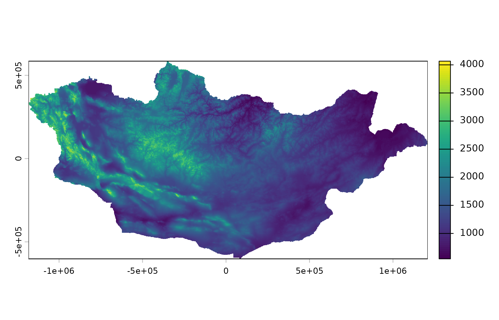
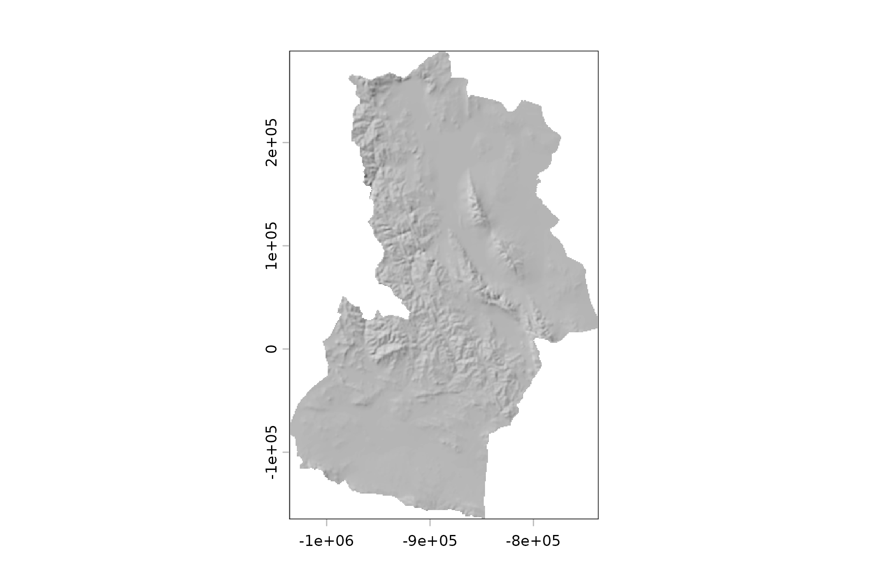

Copernicus DEM GLO-90-ээс Монгол Улсын гадаргуугийн растер.
Arguments
- resolution
"1km"эсвэл"90m".- within
Буцаах газар (нэр эсвэл код). Онлайнаар уншдаг нарийвчлалд заавал өгнө: өндөршилд
"90m", газрын бүрхэвчид"10m".- mask
TRUE(анхдагч) бол Монголоос (эсвэлwithin-ээс) гадуурх нүдийгNAболгоно.- crs
Үр дүнгийн координатын систем.
NULL(анхдагч) бол уртраг, өргөрөг (EPSG:4326) хэвээр. Монголд тохирсон проекцод"albers","lcc"эсвэл"utm"-ийг (mn_crs()-ийг үзнэ үү), эсвэлsf::st_crs()-ийн хүлээн авах дурын утгыг өгнө.- angle, direction
Рельефийн сүүдрийн нарны өндөр, чиглэл (градус).
Value
terra SpatRaster: метрээр илэрхийлсэн өндөршил, эсвэл 0-ээс 1-ийн
хоорондох рельефийн сүүдрийн утга.
Details
resolution = "1km"(анхдагч): Альберсийн проекц дахь улсын тор, нэг удаа (ойролцоогоор 5 МБ) татаж хадгална.resolution = "90m": анхны 90 м-ийн өгөгдөл,withinдахь газарт (аймаг эсвэл түүнээс жижиг) үүлнээс шууд уншина. Юу ч хадгалахгүй.
mn_hillshade() өндөршлөөс рельефийн сүүдэр тооцоолно; бусад давхаргын
дэвсгэрт тохиромжтой.
Эх сурвалж
Copernicus DEM GLO-90, (c) DLR e.V. 2010-2014 and (c) Airbus Defence and Space GmbH 2014-2018, provided under COPERNICUS by the European Union and ESA. Эх сурвалжийг дурдан чөлөөтэй ашиглана.
See also
Растерийн бусад давхарга:
mn_landcover(),
mn_population(),
mn_zonal()
Examples
elev <- mn_elevation()
terra::plot(elev)

ub <- mn_elevation("90m", within = "Ulaanbaatar")
terra::plot(mn_hillshade(within = "Khovd"), col = grey.colors(100), legend = FALSE)
